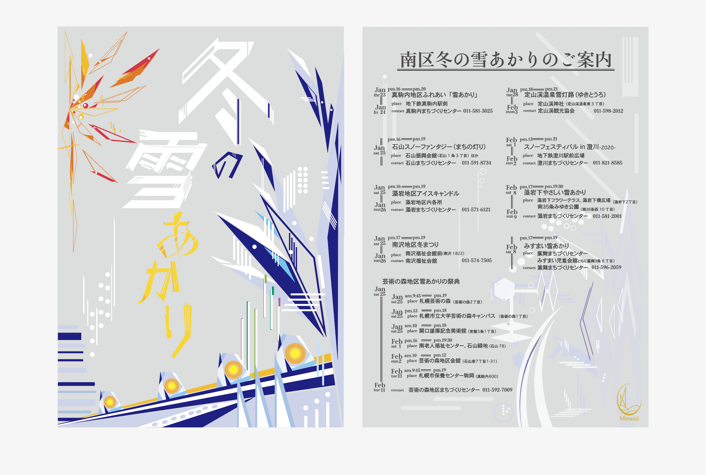

Flyer-Design
ターゲットを若者に設定し、スタイリッシュでかっこいいデザインを意識して制作した。

表面
「冬の雪あかり」というお祭りを冬らしい色と抽象絵を用いて表現したフライヤー。
画面右側の青いモチーフは雪が積もった木をイメージしている。
画面下の三角形の部分は道をイメージしており、そこにアイスキャンドルが並んでいる様子を想像して描いた。
線や丸を用いて雪が降っている様子を表したり、冬らしさを表現できるよう工夫した。
また、「冬の雪あかり」の文字は周りの絵と合うように自作した。
裏面
若者をターゲットとしているため、全体的にすっきりまとめて綺麗に見えるようにした。
特に、日付や時間を英語表記にし、それらのフォントをtimesフォントにすることで上品に見えるようにした。
また、情報量が多いフライヤーになるため、全体が煩雑になって読みにくくならないようにどこになんの情報があるのかを統一した。